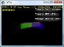

DirectCompute Graphics Win32 Samples
The latest version of this sample is hosted on GitHub.
This is the DirectX SDK's Direct3D 11 AdaptiveTessellationCS40, FluidCS11, HDRToneMapping11, NBodyGravityCS11, and OIT11 samples updated to use Visual Studio 2012 and the Windows SDK 8.0 without any dependencies on legacy DirectX SDK content. These samples are Win32 desktop DirectX 11.0 applications for Windows 8, Windows 7, and Windows Vista Service Pack 2 with the DirectX 11.0 runtime.
This is based on the the legacy DirectX SDK (June 2010) Win32 desktop samples running on Windows Vista, Windows 7, and Windows 8. This is not intended for use with Windows Store apps or Windows RT, although the techniques are applicable.
Description
These samples use DirectCompute in combination with Direct3D 11 using the DXUT for Direct3D 11 framework for Win32 desktop applications. For more basic DirectCompute examples, see DirectCompute Basic Win32 Samples.
AdaptiveTessellationCS40

AdaptiveTessellationCS40 demonstrates some adaptive tessellation techniques implemented using Compute Shader 4.0. You can use the radio buttons in the user interface to switch which tessellation schemes to use and observe how the tessellation pattern changes. The tessellation schemes implemented here are now identical to the triangle patch-based tessellation of Direct3D11 Tessellator Stage. So potentially the technique here could be a fallback solution for future games or other applications that use DirectX 11 hardware tessellation when they are running on devices that support only DirectX 10.x, because Compute Shader 4.0 runs on most DirectX 10.x-capable hardware.
Compute Shader allows more general algorithms to be implemented on the GPU. While the fully featured Compute Shader 5.0 requires Direct3D 11 hardware, a subset of that—Compute Shader 4.x—runs on existing Direct3D 10-compatible hardware, if the driver supports it.
Overview
AdaptiveTessellationCS40 demonstrates how to use Compute Shader to manipulate geometry—the vertex data and index data of the tessellated mesh is generated on the fly in each frame by Compute Shaders, and later bound to the rendering pipeline for rendering. The following aspects of CS4.x are highlighted:
Scattered writes to a structured buffer and a byte address buffer
A structured buffer can be read within all types of shaders and is good for data re-circulation between CS passes. A byte address buffer, also known as a raw buffer, can be bound as a vertex buffer and an index buffer, and thus, it is suitable to store geometry data that can be manipulated. Also note that, unlike CS 5.0, only one resource can be bound to a CS 4.x shader for output.
For more information about structured buffers and byte address buffers, see New Resource Types in the documentation for Direct3D 11.
Use of shared memory
CS 4.x can read from any position of the shared memory, but it can only write to the position that is indexed by SV_GroupIndex. Also, CS 4.x is limited to using a single shared memory. CS 5.0 doesn't have these limitations.
For more information about SV_GroupIndex and the other system-value semantics that were introduced in DirectX 10, see Semantics in the documentation for HLSL.
Use of ID3D11DeviceContext::Dispatch
The z dimension of the thread group grid is limited to 1 in CS 4.x; the upper limit for x and y dimensions are the same in CS 4.x and CS 5.0, which is 65536.
FluidCS11

This sample illustrates how to implement a simple optimized 2D particle fluid simulation. It uses a technique called Smoothed Particle Hydrodynamics to perform the fluid simulation based on the paper “Particle-Based Fluid Simulation for Interactive Applications” by Matthias Müller. To further optimize the simulation for the GPU, a spatial grid is implemented based on the article “Broad-Phase Collision Detection with CUDA” by Scott Le Grand.
Fluid Simulation
Smoothed Particle Hydrodynamics is a simple technique for simulating fluid flows using particles. The basic idea is to use the neighboring particles within a search radius to determine properties at the current location using a smoothing kernel. A particle which is closer to the current location will have a greater influence than a particle which is near to the search radius’s edge. For a full explanation of this algorithm and the equations, please see the paper “Particle-Based Fluid Simulation for Interactive Applications” by Matthias Müller.
Simple N2 Algorithm and Optimized Shared Memory N2 Algorithm
The easiest way to perform the simulation is with a simple N2 search. The compute shader will execute one thread per particle and iterate over all other particles looking for neighbors within the desired search radius. However, this technique is extremely expensive since we only care about particles within a relatively small neighboring area.
We can further optimize this by utilizing shared memory to reduce the required memory bandwidth. Each thread within the thread group will read one potential neighbor into shared memory, and then all of the threads can access the neighbors from the common shared memory. Please see the NBodyGravityCS11 sample for more information on both of these techniques. This helps improve the performance greatly, but this is still only useful for a small number of particles.
Optimized Spatial Grid
Because each particle only needs to intact with its neighbors within a small radius, a full N2 search of all neighbors is excessive. If we can limit the work to only comparing nearby neighboring particles, then we will greatly reduce the required memory bandwidth. Since our search radius has a maximum size, we can do this by dividing the world into an even grid that is the same size as the search radius. Our search will be limited to just the occupants of the current particle’s grid cell plus the occupants of the neighboring eight cells.
Calculate the Grid Cell ID
The first step is to determine which grid cell each particle is in. Particles that occupy the same grid cell will share the same grid cell ID. A very simple combination of the cell’s X and Y position can be used to uniquely identify each cell. This information along with the particle’s ID will be stored in a structured buffer for the next step.
Sort the Grid IDs
Next we need to sort the structured buffer of grid cell IDs and particle IDs. This will have the effect of organizing all of the particles that occupy the same cell next to each other in memory. For this sample, we used the bitonic sort from the CompuerShaderSort11 sample.
Find the Grid Indices
We have constructed a sorted list of every particle and the cell ID it occupies, but we do not have a way to index that information based on a cell ID yet. The next step will search the list for the start and end location of each cell and store that information. To do this, we execute one thread per element of the list. If the element to the left in the list has a different grid cell ID, then this must be the first occupant in the cell. Recall that we sorted this data in the previous step. Similarly, if the element to the right has a different ID, then we are the last occupant. By recording the start and end index for each cell ID we can easily lookup all of the particles in a given cell in the next step.
Perform the Simulation
Lastly, we must perform the simulation. The core of the simulation is unchanged; however, this time we need only search for potential neighbors within the adjacent cells. All we need to do is calculate our grid cell ID and the cell IDs of the neighboring cells. Using this we can look up the particles in those cells by looking at the indices built in the previous step. Then we check if the particle is within the search radius and perform the simulation same as before.
HDRToneMapping11
HDRToneMappingCS11 shows how to setup and run the compute shader(CS), which is one of the most exciting new features of Direct3D 11. Although the sample only utilizes the CS to implement HDR tone-mapping, the concept should extend easily to other post-processing algorithms, as well as to more general calculations.
Overview
HDRToneMappingCS11 shows the use of the CS to do fast parallel reduction on the image to calculate average illuminance, and then use the calculated illuminance to do tone mapping. Until the real Direct3D 11 hardware comes along, the sample only runs on the software reference device. However, we encourage developers to start experimenting with the CS right now. Doing post-processing, as well as more general calculations using the CS, has the following advantages (at least) over the traditional of rendering a screen quad and then calculating by using the PS:
- The CS is capable of writing to any position of the output resource (also known as the ability to scatter). This allows more general and complex algorithms to be implemented on the graphics hardware.
- The CS provides mechanisms to share data, as well as to synchronize execution between threads. These abilities significantly reduce the number of redundant fetch operations, buffer or texture, especially for algorithms that involve the kernel or reduction calculations.
- Direct3D 11 has a dedicated API to explicitly launch a known number of CS threads on the GPU. This enables the algorithm to execute on an optimal number of threads, and it also provides predictable memory access and register usage. These lead to better performance and create more possibilities for optimization.
- The CS is not attached specifically to any stage of the graphics pipeline, and it has its own set of states. This means that your rendering pipeline and post-processing unit are decoupled from each other, which allows creation of code that is easier to maintain.
CS 4.x and Post-Processing
Since CS 4.x lacks the ability of writing to textures directly, we have to:
- Use a structured buffer instead of texture 1D as the intermediate result in the reduction operation.
- Tile the image that is output from the two passes of the separable convolution (used in blur and bloom) to a structured buffer instead of outputting to texture 2D directly.
- Add an extra rendering pass to convert the image data that is stored in a structured buffer back to texture 2D before it can be sampled in the final composition pass.
- Use pixel shader to update the back buffer in the final composition pass.
Nonetheless, CS 4.x is good for the post-processing world because:
- As long as your post-processing algorithm doesn't require a texture resource as an intermediate result between passes, such as HDR tone mapping and histogram, CS 4.x could potentially provide better performance.
- As for other cases where multiple passes and intermediate texture data are necessary, although the implementation of these algorithms for CS 4.x may be slower (due to the redundant data conversion), it is still a great platform for prototyping and testing future CS 5.0 algorithms. CS 4.x is a core subset of CS 5.0, so it can help you understand most of the key benefits provided by the compute shader architecture—and you can play with these features on hardware today! Image convolution is an example.
Harness the Power of Shared Memory in Convolutions
When doing convolution in pixel shader, for each output pixel, adjacent pixels in the input texture are always read in, multiplied by weights, and then added together to get the value for the result. There will be many redundant reads in this operation, especially when the convolution kernel gets larger.
However, if the convolution is implemented in compute shader, we could use the shared memory to load as many pixels as the number of threads in the thread group—and of course, multiple thread groups work concurrently to process multiple chunks of the input image—and then carry out the kernel convolution operation on the shared memory efficiently. Shared memory is usually implemented by hardware vendors as on-chip registers or a part of its on-chip cache, and thus, it is very fast to access. You could think of this benefit as the shared memory architecture brings the ability to explicitly program the behavior of a large cache, so that the hit ratio can be very ideal, because you know the explicit access pattern of your algorithm.
In this scheme, each pixel in shared memory is loaded only once from input image using texture read, and adjacent input pixels are always found in the shared memory when calculating result pixels. Please refer to FilterCS.hlsl for details on how this is done.
NBodyGravityCS11

This is one of the Compute Shader demos shown at GDC09. This sample shows an N-Body particle system implemented using Compute Shader 4.0. Because of benefits brought by Compute Shader, it achieves significantly higher frames per second than the previous NBodyGravity sample under the Direct3D 10 section, which was implemented using Direct3D 10 Pixel Shader and Geometry Shader.
How the Sample Works
The sample uses a structured buffer to store the position and velocity of each particle in the system. Each thread of the Compute Shader updates one of the particles in each frame. Compute Shader 4.0 can read and write to the structured buffer directly, which makes it easy to recirculate data between passes in this sample.
In order to update each single particle, the position of every other particles need to be accessed. This is very I/O intensive. To increase I/O efficiency, we use Compute Shader shared memory to cache a tile of particles, and then update against these cached particles instead of fetching them directly from video memory. Refer to NBodyGravityCS11.hlsl to see how this is done.
OIT11

Demonstrates a technique for achieving order-independent transparency in Direct3D 11.
Overview
This sample, demonstrates a technique for achieving order-independent transparency in Direct3D 11. In other words, primitives can be drawn in any order, and transparency will be handled correctly. The technique works by buffering transparent pixels as they are rendered. These pixels are then sorted by depth, and rendered in back-to-front order with transparency. This sample uses compute shaders to generate a prefix sum and to sort the pixel fragments before the final render pass.
The algorithm executes a series of passes:
- Determine the number of transparent fragments in each pixel by drawing each of the transparent primitives into an overdraw accumulation buffer.
- Create a prefix sum for each pixel location. This holds the sum of all the fragments in each of the preceding pixels. The last pixel will hold a count of all fragments in the scene.
- Render the fragments to a deep frame buffer that holds both depth and color for each of the fragments. The prefix sum buffer is used to determine the placement of each fragment in the deep buffer.
- Sort the fragments and render to the final frame buffer. The prefix sum is used to locate fragments in the deep frame buffer.
Dependancies
DXUT-based samples typically make use of runtime HLSL compilation. Build-time compilation is recommended for all production Direct3D applications, but for experimentation and samples development runtime HLSL compiliation is preferred. Therefore, the D3DCompile*.DLL must be available in the search path when these programs are executed.
- When using the Windows 8.x SDK and targeting Windows Vista or later, you can include the D3DCompile_46 or D3DCompile_47 DLL side-by-side with your application copying the file from the REDIST folder.
%ProgramFiles(x86)%\Windows kits\8.0\Redist\D3D\arm, x86 or x64
%ProgramFiles(x86)%\Windows kits\8.1\Redist\D3D\arm, x86 or x64
Building with Visual Studio 2010
The code in these samples can be built using Visual Studio 2010 rather than Visual Studio 2012. The changes required are:
- Change the Platform Toolset to "v100"
- Obtain the Windows SDK 8.0
- Use the instructions for adding the Windows 8.0 SDK headers for VS 2010 projects
Building with Visual Studio 2013
This sample can be modified to build with the Visual Studio 2013 using the Windows 8.1 SDK. Set the Platform Toolset to "v120" for all configurations, and obtain the latest DUXT package. Remove the "DXUT_2012.vcxproj" & "DXUTOpt_2012.vcxproj" references, add the projects "DXUT_2013.vcxproj" & "DXUTOpt_2013.vcxproj", and add new References to these project.
You can also allow VS 2013 to upgrade the projects in place.
Version History
- July 28, 2014 - Updated for DXUT July 2014 release
- September 18, 2013 - Initial release
More Information
Where is the DirectX SDK (2013 Edition)?
Games for Windows and DirectX SDK blog